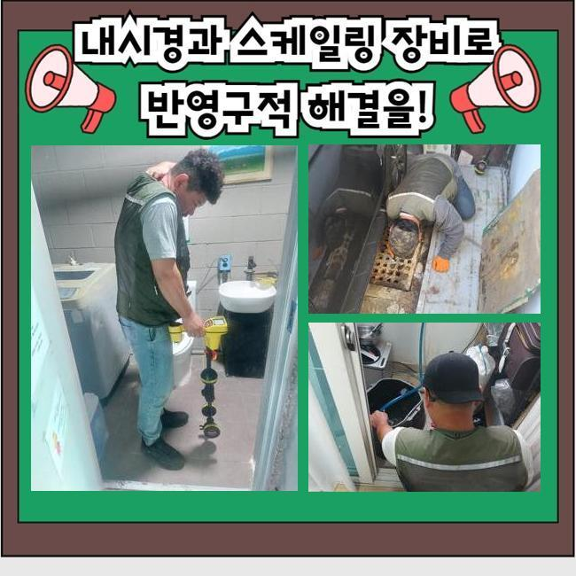
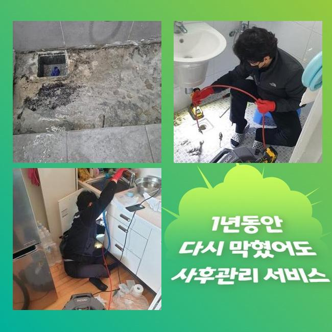
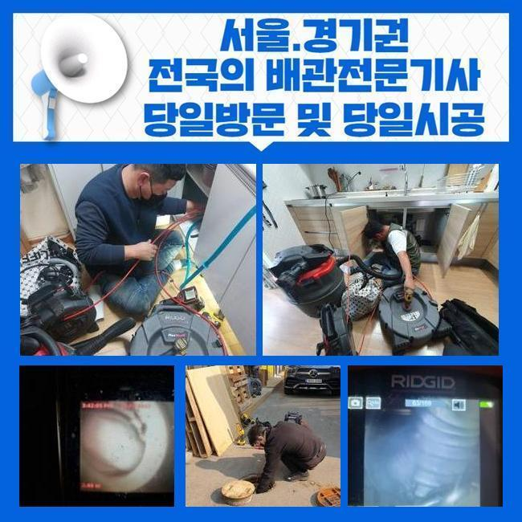
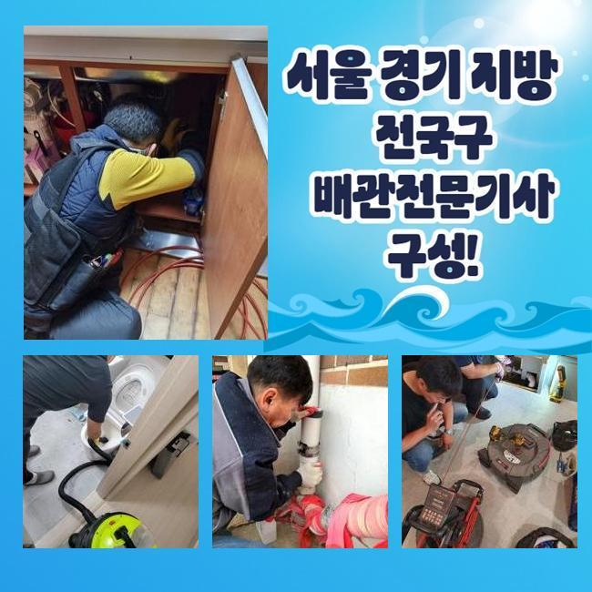
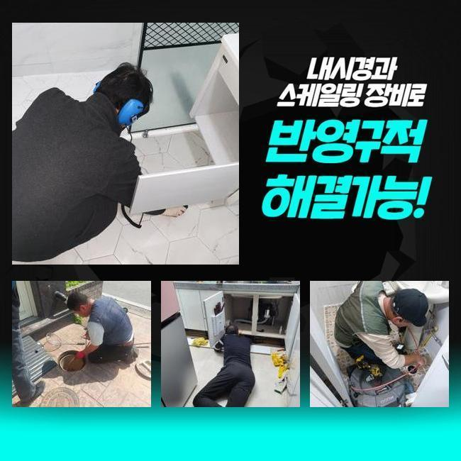

🏠 종로 견지동오수관막힘 운니동 배수구뚫기 통수전문
용인 지동 하수구막힘 전문 시공 후기

📋 작업 개요
- 위치: 용인 지동, 지동, 용인
- 서비스 유형: 하수구막힘, 배관막힘, 누수수리, 역류해결, 뚫는업체, 고압세척, 설비공사, 악취차단
- 작업 일시: 2025. 5. 22. 21:21
- 업체명: 하수구수사대 (010-5615-2118)
🔍 문제 상황
종로 견지동오수관막힘 운니동 배수구뚫기 통수전문
관로가 정체되는 문제는 한번쯤은 경험하셨으리라 생각하는데요
특히 욕실 및 개수대에서 발현되는 배수관 정체는 일상에 곤란함을 유발하고 있답니다
그러면 주방에선 어찌된 영문으로 정체사태가 발현되는 걸까요
주방시설은 설거지에서 발생하는 음식 쓰레기나 석회성분 등이 관로에 누적돼 막힘이 일어나요
그러한 사태가 계속되면 배수가 안되는것은 물론이고 구린내가 올라오며 노폐물들로 인해 관로가 노화되어서 더욱 커다란 트러블을 촉발할수 있어요
어떤 분들은 이런일이 일어났다면 뚫어뻥 등을 활용해서 해결해보려 시도하시는데요
하지만 그 방책은 잠시간의 물길만 만들뿐 근원적인 트러블을 소멸시키지 못한다면 정체가 재발하게 되겠죠
차단을 만든 잔재들이 관의 밑부분에 존재한다면 맨눈으로 그것을 보거나 소멸시키기 힘듭니다
그리고 어설프게 장비를 사용하는경우에 도리어 파이프에 부담을 주게되어 찌꺼기들을 올바르게 정리해낼수가 없는거랍니다
그러하기에 관로의 정체가 발발하였다면 전문가에게 의뢰하여 분명하고 깔끔하게 정리하는게 바람직하다고 말씀드릴수 있어요

🔎 원인 분석
💡 전문가 진단: 정밀 진단 장비를 사용하여 슬러지의 고착 여부를 판명하고 타격/세척 작업을 실시했습니다.
일주일전에 저희팀은 하수관막힘 관련 수리 요청 전화를 받았답니다
고객님은 화장실의 물막힘으로 역류 및 악취발생이 심하여 일상에 곤란함을 경험하고 있으셨답니다
냄새가 너무 심해서 생활을 이어나가기가 힘겨웠고 역류까지 일어나 화장실이 더욱 지저분해지는 형편에 이르게 되었다 하셨어요
의뢰자의 괴로움을 조속히 없애드리려 곧바로 말씀하신 곳으로 출동하였습니다
내방한뒤에 의뢰자와 상담하고 고장상황을 상세하게 파악하였어요
의뢰인께선 욕실에서 배수가 아예 안되고 역류증세까지 간헐적으로 나타나 공간이 오염되어버린 상황이라고 토로하셨어요
한달전부터 미세한 막힘현상이 벌어지게 되었는데 내버려뒀다가 더욱더 악화한 상황이었죠
이럴때에는 간단히 관로뚫음을 이행하여서는 본질적인 해결에 다가서기 힘들죠
이물들이 파이프에 강하게 달라붙어있는 거라 내측의 상황을 정밀하게 분석하고 적합한 기기와 방식을 토대로 공정에 임해야 됩니다
깊숙한 위치에서 생긴 문제들은 육안으로 검사하기 까다롭죠
그러한 이유로 저희팀에선 내시경기기를 사용해 관로내부 현황을 밀도있게 검사하게 되었던거죠
배관카메라로 확인하니 관로속엔 오랜시간 적체된 석회성분들과 기름슬러지가 엉겨붙어 통로를 완전하게 차단시키고 있었죠

🔧 작업 과정
또한 침전물들이 딱딱하게 고정되어서 단순하게 물세척만해서는 정리가 어려웠답니다
배수관 관측을 마무리한뒤 분쇄기기를 이용해서 파이프에 강력하게 붙은 슬러지를 소제하는 공정을 시행하였어요
샤프트 기계는 배관속에 누증된 슬러지 등을 재빠르게 와해시키고 소제하는 장비로 안쪽의 기름슬러지가 단단하게 굳어져 있을때 상당히 쓸모가있죠
샤프트기기는 회전능력을 통하여 잔재들을 미세하게 분쇄해서 배관면에 체류중인 견고한 기름때와 석회물질을 온전히 소멸시킬수 있어요
그렇긴하지만 조절을 잘못하여 분쇄를 단행한다면 관로가 훼손되는 경우도 있어 실전적인 기술력과 신중한 접근이 중요한 것이랍니다
금번에 찾아간 현장은 또한 침전물들이 배관에 단단히 접착된 상황이었기에 몇번의 공정으로는 정비를 완수하기 힘겨웠죠
관로 곳곳에 체류하는 백회물질은 한층 그런 사태를 어렵게했고요
그러한 이유로 저희팀에선 고압세정기기와 샤프트기기를 병행 사용하면서 잔재들을 소제하고 안전히 제거하는 작업을 시행하였습니다
강력한 압력으로 찌꺼기를 정리할 땐 파편이 주변으로 흩날리지 않게 철저하게 보호해야 돼요
슬러지가 주위로 퍼져나가 주변부가 심히 오염된다면 정리하기 힘들어질수도 있기 때문에 집중해서 작업해나가야 하는거죠
그러므로 시공중에 그러한 사태를 막기 위하여 보호작업을 시행했고 의뢰인분께서 우려하지 않으시도록 빈틈없이 세정을 진행했죠
찌꺼기를 제거하고나서 거듭하여 내시경설비를 이용해 파이프를 검사하였죠
안에 상존하는 기름슬러지나 누수문제 등을 조사하는건 상당히 중대한 업무입니다
금번 시공에선 여러번 하수관 곳곳을 진단하며 동시에 일어날 가능성이 높은 트러블을 예방했어요
전체 찌꺼기들이 없어진걸 체크하고 하수를 내리며 배수성능이 돌아왔는지 최종진단 하였습니다
신속하게 물이 빠지는걸 직각적으로 파악하였습니다
배수구로 하수가 원만하게 소멸되는걸 고객분도 인지하셨고 완전하게 고쳤다는걸 확인했어요
공사가 지연되어 찌꺼기가 더더욱 늘어나게 된다면 주변이웃들에게 고장상황이 이동할수 있는데요
그러면 고민해야할 사안이 더욱 많아질수 있으므로 서둘러서 수리를 받으시는 것이 마땅합니다


✅ 작업 완료
그것에 더하여 하수구막힘은 일상을 영위하시는데 트러블을 일으키기에 되도록 빨리 정리하는게 좋죠
배관막힘이 심해진다면 위생적인 문제를 줄뿐만 아니라 누수까지 나타나기 쉽다는걸 생각해야 돼요
공정을 시작하기 전에는 필수로 합당한 수리기기를 소지해두어야 하겠습니다
그것이 미비되면 검사를 똑바로 못해서 다시 막힐수도 있어요
급작스럽게 일어난 막힘으로 진단이 필요하다면 저희쪽으로 편하게 문의해 주십시오



⚠️ 베란다 누수 및 방수 관리 방법
- ✅ 비가 많이 올 때 창틀 주변이나 아래층 천장에 얼룩이 생기는지 정기적으로 확인해 보세요.
- ✅ 우수관 주변 실리콘 마감이 들뜨거나 깨진 틈새가 있는지 손상 여부를 수시로 체크하세요.
- ✅ 베란다 바닥 타일의 줄눈(메지)이 소실되면 그 틈으로 물이 침투하여 누수가 유발됩니다.
- ✅ 누수 의심 증상 발견 시 방치하면 아래층 손실이 커지므로 즉시 전문가의 진단을 받으십시오.
💡 핵심 정리
- 확실한 장비 작업(내시경 점검 및 샤프트 스케일링)으로 원인을 뿌리 뽑습니다.
- 작업 후 1년 이내에 동일한 부위 재발 시 100% 무상 A/S 서비스를 보장합니다.
- 서울 · 경기 · 인천 전 지역에 24시간 언제든 긴급 출동할 수 있도록 항시 대기 중입니다.
❓ 자주 묻는 질문 (FAQ)
🚨 용인 지동 하수구막힘 문제로 고민이신가요?
정확한 원인 진단과 확실한 시공으로 재발 없는 해결을 약속드립니다.
24시간 긴급 출동 | 서울 · 경기 · 인천 전지역 | 1년 내 재발 시 무상 A/S